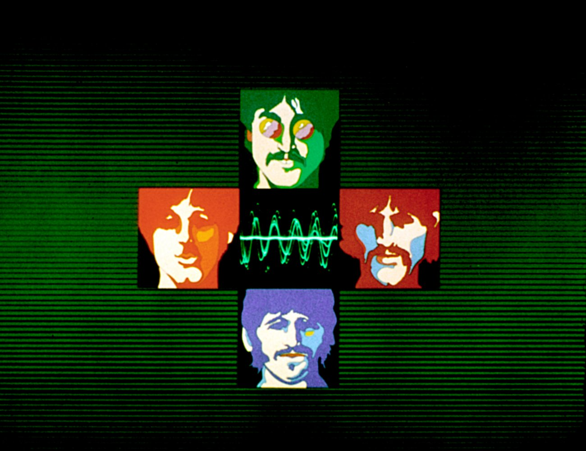
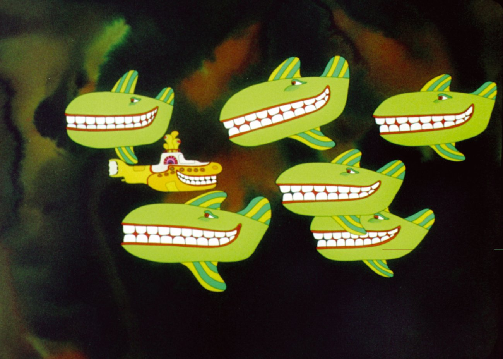
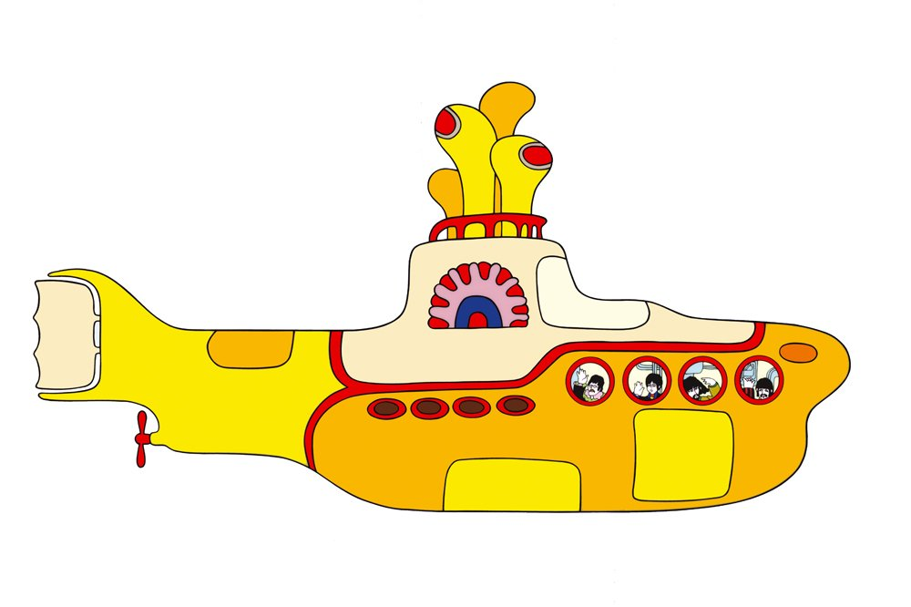
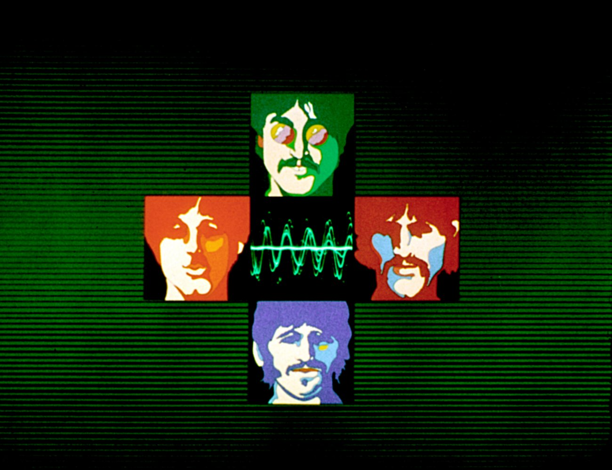
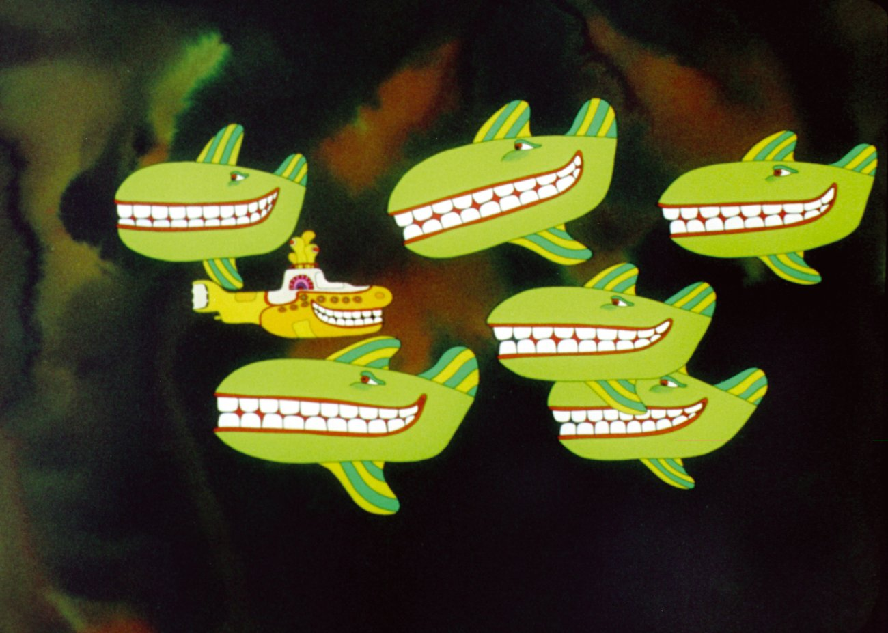

- Yellow Submarine
- Only a Northern Song
- All Together Now
- Hey Bulldog
- It’s All Too Much
- All You Need Is Love
- Pepperland
- Sea of Time
- Sea of Holes
- Sea of Monsters
- March of the Meanies
- Pepperland Laid Waste
- Yellow Submarine in Pepperland
- Eleanor Rigby (instrumental)
- Love You To (instrumental)
☰



Menu
Yellow Submarine
Lançado na Grã-Bretanha em 17 de janeiro de 1969 (e alguns dias antes nos EUA), Yellow Submarine foi a trilha sonora de um longa-metragem de animação que havia recebido sua estreia no Reino Unido cerca de seis meses antes.
O lançamento original do LP continha as faixas dos Beatles no lado um com uma partitura orquestral recém-gravada composta e arranjada por George Martin ocupando o lado dois do disco. Das faixas dos Beatles, quatro eram músicas novas. O álbum nunca foi concebido como um lançamento de alto perfil dos Beatles, na verdade, foi lançado quando os Beatles ainda eram o número 1. Apesar disso, o álbum ainda conseguiu uma posição de número 3 na Grã-Bretanha e subiu um lugar mais alto nos EUA.

